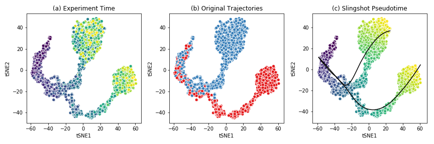

This tutorial will first explain the structure of the Beeline repository, with a walkthrough of the different components that the user can customize.
Project outline¶
The BEELINE repository is structured as follows:
Beeline
|-- inputs/
| `-- examples/
| `-- GSD/
| |--refNetwork.csv
| |--PseudoTime.csv
| `--ExpressionData.csv
|-- config-files/
| `-- config.yaml
|-- BLRun/
| |-- sinceritiesRunner.py
| `-- ...
|-- BLPlot/
| |-- NetworkMotifs.py
| `-- CuratedOverview.py
|-- BLEval/
| |-- parseTime.py
| `-- ...
`-- Algorithms/
`-- SINCERITIES/
Input Datasets¶
The sample input data set provided is generated by BoolODE using the Boolean model of Gonadal Sex Determination as input. Note that this dataset has been pre-processed to produce three files that are required in the BEELINE pipline.
ExpressionData.csv contains the RNAseq data, with genes as rows and cell IDs as columns. This file is a required input to the pipline. Here is a sample ExpressionData.csv file
PseudoTime.csv contains the pseudotime values for the cells in ExpressionData.csv. We recommend using the Slingshot method to obtain the pseudotime for a dataset. Many algorithms in the pipeline require a pseudotime file as input. Here is a sample PseudoTime file.
refNetwork.csv contains the ground truth network underlying the interactions between genes in ExpressionData.csv. Typically this network is not available, and will have to be curated from various Transcription Factor databases. While this file is not a requirement to run the base pipeline, a reference network is required to run some of the performance evaluations in BLEval package. Here is a sample refNetwork.csv file
The figure below shows the t-SNE visualization of the expression data from the example dataset.
This dataset shows a bifurcating trajectory, as is evidenced by the part (a) of the figure, where each ‘cell’ is colored by the timepoint at which it was sampled in the simulation (the darker colors indicate earlier time points). Clustering the simulation confirms the two trajectories, indicated in red and blue respectively in part (b). Finally, running Slingshot on this dataset and specifying the cluster of cells corresponding to the early time points yields two pseudotime trajectories, shown in part (c). For details on the generation of this simulated dataset, see BoolODE.
Attention
Please ensure that any input dataset you create is comma separated, and contains the correct style of column names.
Config files¶
Beeline uses YAML files to allow users to flexibly specify inputs and algorithm run parameters. A sample config file is provided in here. A config file should contain at minimum
input_settings:
datasets:
- name: "Dataset name"
exprData: "Expression Data filename"
cellData: "PseudoTime filename"
trueEdges: "Ground truth network filename"
algorithms:
- name: "Algorithm name"
params:
# Any other parameters that can be passed to
# this algorithm
should_run: [True] # or False
Apart from indicating the path to the base directory and the specific folder containing the input, the config file indicates which algorithms should be run, along with the parameters to be passed to the algorithms, if any. For a list of parameters that the pipeline currently passes to the algorithms, see Details of supported algorithms . Finally, the YAML file also specifies the paths to the outputs.
Attention
Please ensure that the YAML file is correctly indented!
Running the pipeline¶
Once the input dataset has been generated and formatted as described
in Section Input Datasets , and the config file has been
created as described in Config files, the pipeline can be
executed by simply calling BLRun.py with the config file
specifying the inputs and the algorithms to run, passed using the
--config option which takes the path to the config file.
To run the pipeline, simply invoke
python BLRunner.py --config PATH/TO/CONFIG/FILE
For details about the implementation of BLRun , see BLRun Details .
Running the evaluation scripts¶
Each algorithm outputs an inferred network in the form of a ranked edge list. BEELINE implements a consistent interface using the config file in order to retrieve the predictions of multiple algorithms and evaluate them using a variety of methods.
The evaluation of the inferred networks is done by calling the
BLEvaluator.py script. Like the BLRunner.py script, the
EvalAggregator script takes the config file as input. Every subsequent
option passed to this script calls a different evaluation script. For instance,
in order to analyze the AUROC and AUPRC values, and also analyze network motifs,
use the following command
python BLEvaluator.py --config PATH/TO/CONFIG/FILE \
--auc \ # calls the computeAUC script
--motifs \ # calls the computeNetMotifs script
For a full list of available evaluation functions and their corresponding options to
be passed to BLEvaluator.py, see BLEval Details .